SCROLL
DOWN
SUN 태양
- 구분 : 항성
- 분광형 : G형 주계열성 (G2V)
- 지름 : 1,392,684 ± 130 km (지구의 109배)
- 질량 : 1.98855 × 1030 kg (지구의 33만 배)
- 광도 : 3.846 × 1026 W
- 자전 주기 : 적도 기준 약 25일 1시간 12분, 극 기준 약 34일 9시간 36분 (평균 약 27일 6시간)
- 표면 온도 : 5778 K(5500 ℃)
- 대기 조성 수소: 73.46%, 헬륨: 24.85%, 산소: 0.77%, 탄소: 0.29%, 철: 0.16%, 네온: 0.12%, 질소, 규소, 마그네슘, 황 등
- 자전축 기울기 : 황도면 기준 7.25°, 은하면 기준 67.23°
- 절대등급 : 4.83
MERCURY 수성
- 구분 : 내행성 지구형 행성
- 평균지름 : 4,879.4 km
- 표면적 : 7.5 × 107 ㎢
- 질량 : 3.023 × 1023 ㎏
- 태양 기준 거리 : 0.387098 AU (약 5806만 4700km)
- 공전 주기 : 87.9691일
- 자전 주기 : 58.646일
- 자전축 기울기 : 0.0352°
- 대기 조성 : 산소(분자) 42%, 나트륨 29%, 수소 22%, 헬륨 6%, 칼륨 0.5%, 그 외
- 평균 온도 : 390 K(섭씨 117도)
- 표면 중력 : 0.377 G
- 위성 : 없음
VENUS 금성
- 구분 : 내행성 지구형 행성
- 평균지름 : 12,103.7km
- 표면적 : 4.60×108 ㎢
- 질량 : 4.869×1024 kg
- 태양 기준 거리 : 0.723332 AU (약 1억 849만 9800km)
- 공전 주기 : 224.701일
- 자전 주기 : 243.025일
- 자전축 기울기 : 177°
- 대기 조성 : 이산화탄소 96.5%, 질소 3.5%, 이산화황 0.015%, 아르곤 0.007%, 수증기 0.002%, 일산화탄소 0.0017%
- 평균 온도 : 730K(섭씨 457도)
- 표면 중력 : 0.904G
- 위성 : 없음
EARTH 지구
- 구분 : 지구형 행성
- 표면 : 바다, 대륙
- 둘레 : 40,075 km
- 적도반경 : 6,378.14 km
- 표면적 : 5억 1,007만 2,000 ㎢
- 질량 : 5.9736 x 1024 kg
- 태양 기준 거리 : 1 AU (1억 4,959만 8,023km)
- 공전 주기 : 365.25641일
- 자전 주기 : 23시간 56분 4.1초 (0.99726968일)
- 자전축 기울기 : 23.4392811°
- 대기 조성 : 질소 78.08%, 산소 20.95%, 아르곤 0.93%, 이산화탄소 0.038%
- 평균 온도 : 288K(섭씨 15도)
- 표면 중력 : 9.80665 m/s2 (3차 CGPM)
- 위성 : 1개 (달)
MARS 화성
- 구분 : 외행성 지구형 행성
- 평균지름 : 6,779.0±0.2 km
- 표면적 : 1.4437×108 ㎢
- 질량 : 6.4174×1023 kg
- 태양 기준 거리 : 1.523679 AU (약 2억 2793만 9366km)
- 공전 주기 : 686.971일
- 자전 주기 : 24시간 37분 22초 (1.025957일)
- 자전축 기울기 : 25.19°
- 대기 조성 : 이산화탄소 95.72%, 질소 2.7%, 아르곤 1.6%, 산소 0.2%, 일산화탄소 0.07%, 수증기 0.03%, 일산화질소 0.03%
- 평균 온도 : 210K(섭씨 -63도)
- 표면 중력 : 0.376G
- 위성 : 2개 (포보스, 데이모스)
JUPITER 목성
- 구분 : 외행성 목성형 행성 (거대 가스 행성)
- 평균지름 : 142,984km (적도), 133,709 km (극)
- 표면적 : 6.1419 × 1010 ㎢
- 질량 : 1.899 × 1027 kg
- 태양 기준 거리 : 5.20260 AU (약 7억 8039만km)
- 공전 주기 : 약 11.8618년 (4,332.59일)
- 자전 주기 : 약 9시간 55분
- 자전축 기울기 : 3.13°
- 대기 조성 : 수소 89.8%, 헬륨 10.2%, 메테인 0.3%, 암모니아 0.026%
- 평균 온도 : 165K (섭씨 -108도)
- 표면 중력 : 2.528G
- 위성 : 79개 (갈릴레이 위성 외 다수)
SATURN 토성
- 구분 : 외행성 목성형 행성 (거대 가스 행성)
- 평균지름 : 120,536km (적도), 108,728km (극)
- 표면적 : 4.27×1010 ㎢
- 질량 : 5.6846 × 1026 kg
- 태양 기준 거리 : 9.554909 AU (약 14억 3323만 6350km)
- 공전 주기 : 29.4571년 (10,759.22일)
- 자전 주기 : 10시간 33분 38초
- 자전축 기울기 : 26.73°
- 대기 조성 : 수소 96%, 헬륨 3%, 메테인 0.4%, 암모니아 0.01%, 중수소화수소 0.01%, 에테인 0.0007%
- 평균 온도 : 1 bar 기준 134K (섭씨-139도), 0.1 bar 기준 84K (섭씨-189도)
- 표면 중력 : 1.065G
- 위성 : 82개 (타이탄 외 다수)
URANUS 천왕성
- 구분 : 외행성 목성형 행성 (거대 얼음 행성)
- 평균지름 : 51,118km(적도), 49,946km(극)
- 표면적 : 8.084×109 ㎢
- 질량 : 8.6832×1025 kg
- 태양 기준 거리 : 19.2184 AU (약 28억 8276만km)
- 공전 주기 : 84.0205년 (30,688.5일)
- 자전 주기 : 약 17시간 14분 24초
- 자전축 기울기 : 97.77°
- 대기 조성 : 수소 83%, 헬륨 15%, 메테인 1.99%, 암모니아 0.01%, 에테인 2.5ppm, 에타인 1ppm
- 평균 온도 : 55K (섭씨 -218도)
- 표면 중력 : 0.886G
- 위성 : 27개 (티타니아 외 다수)
NEPTUNE 해왕성
- 구분 : 외행성 목성형 행성 (거대 얼음 행성)
- 평균지름 : 24,764±15 km(적도), 24,341±30 km(극)
- 표면적 : 7.6183×109 ㎢
- 질량 : 1.02413×1026 kg
- 태양 기준 거리 : 30.33 AU (약 45.4억 km)
- 공전 주기 : 164.8년 (60,182 일)
- 자전 주기 : 0.6713일 (16시간 6분 36초)
- 자전축 기울기 : 28.32°
- 대기 조성 : 수소 80%, 헬륨 19%, 메테인 1% 미만, 에테인 1.5ppm
- 평균 온도 : 72K (섭씨 −201도)
- 표면 중력 : 1.14G
- 위성 : 14개 (트리톤 외 다수)